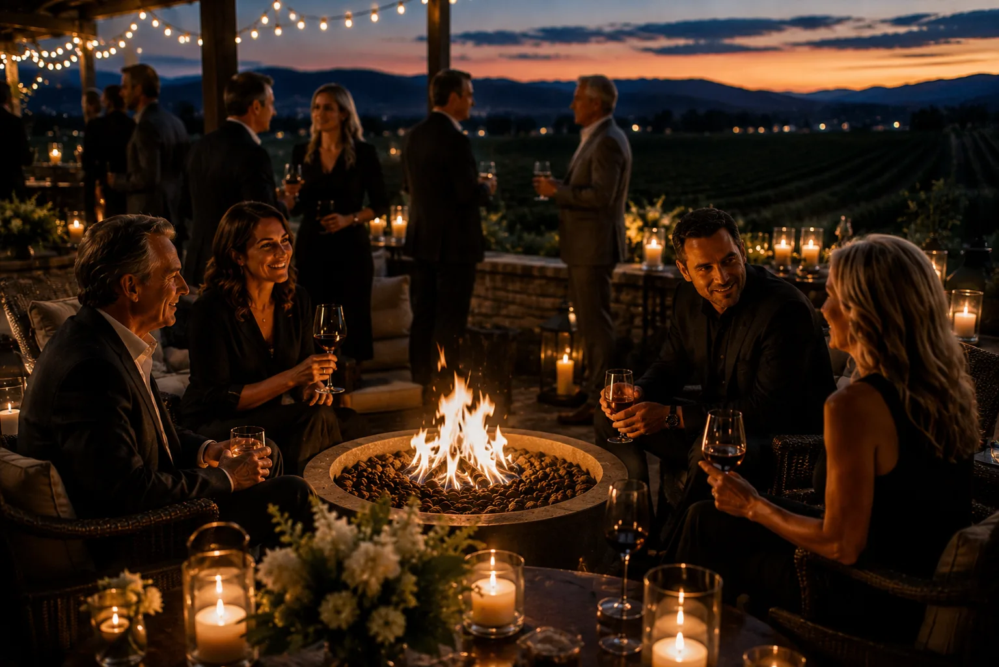

9 Unique Client Appreciation Event Ideas That Go Beyond the Expected.
Client appreciation does not have to mean another gift basket or dinner reservation. Here are nine ways to give your best clients a reason to spend time together, and why each one works.
Summer 20267 Minute Read
Most client appreciation lands the same way: a gift basket, a branded item, a dinner reservation someone will forget by the weekend. It is kind, and it is easily missed in a busy inbox. The events people actually remember tend to have one thing in common. They give people a reason to be somewhere together, rather than simply handing them something.
That is the useful shift. Instead of asking what to send, ask what you could invite your best clients into: an evening, an experience, a few unhurried hours worth clearing the calendar for. Below are nine ideas that do exactly that, with a note on why each one works and the kind of client and group it suits. Some are elaborate. Some are quiet. The best one for you is the one that fits the people you want to thank.
Before the Ideas, a Simple Test.
A client appreciation event does not have to be expensive to feel considered, and it does not become memorable by being bigger. Before you commit to anything on this list, hold it up to three quick questions. Does it suit the specific people you are thanking, or is it generic? Does it invite conversation, or just fill time? And does it feel like you thought about them, rather than checked a box?
Almost everything worth doing passes those three. Keep them in mind as you read, and notice how often the difference between a forgettable event and a good one is not the budget. It is the intention behind it.
01A Private Winery or Vineyard Evening.
A tasting hosted after hours, when the tasting room belongs only to your group, turns a familiar activity into something that feels personal. In Napa, Sonoma, and across Northern California wine country, a small evening among the barrels or on a terrace at golden hour gives clients a setting they would rarely book for themselves.
Best for clients who value good taste and unhurried time, and for groups small enough to actually talk. What keeps it from feeling generic is the intimacy: a private pour and a host who knows the winemaker beats a crowded public tasting every time. Think about the size of the room, and keep the guest list small enough that no one is left standing alone.
02A Chef-Led Dinner in a Private Room.
Not a reservation at a busy restaurant, but a dinner built around your table: a private room, a set menu, and a chef who steps out to talk through the courses. The difference is attention. When the evening is clearly designed for your guests rather than squeezed between other seatings, they feel it.
Best for your most important clients, and for numbers small enough that one conversation can carry the table. It suits hosts who want warmth over spectacle. The thoughtful detail is often the seating: put people beside someone they will genuinely enjoy, and the dinner does the rest.
03A Golf Outing With a Moment They Don't Expect.
Golf has been a client sport for a century because it gives people hours of easy, side-by-side time. What lifts it above the standard scramble is a small surprise somewhere in the round: an unexpected stop on the course, a reason for the groups to gather at the turn, something that gets everyone talking at dinner afterward.
Best for clients who already love the game, and for larger groups where a round gives structure to the day. The pitfall is letting it feel like every other outing. One considered detail, planned in advance, is what people remember and mention the next year.
04A Sunset Gathering at a Private Estate.
Some of the best evenings are simply a beautiful place, a small crowd, and enough time to relax into it. A private estate at golden hour, with a view and a few chairs arranged for conversation, needs very little programming. The setting does the work, and the openness of it lets people find each other naturally.
Best for a mix of clients who may not all know one another, and for hosts who would rather set a mood than run an agenda. Keep it loose. The moment it starts to feel scheduled, it loses the ease that made it special.
05An Attended Cigar Experience.
An attended cigar experience is less an activity than a gathering point. Set within a larger evening, it gives guests a warm corner to drift toward, choose something, and settle into conversation. It is the idea on this list that Simply Sexy Cigars was built around, and it works because it asks nothing of the guest except to enjoy themselves.
The ritual, made easy: choose, cut, light
Planning begins with a conversation. Simply Sexy Cigars works with the host to select cigars suited to the occasion, the guests, and the budget in mind, with one thoughtfully selected cigar for each adult guest taking part. The experience is attended throughout, and an ambassador helps every guest choose, cut, light, and enjoy comfortably, which is why it works just as well for someone holding their first cigar as for a longtime enthusiast. Cigar participation is intended for adults age 21 and older.
Best for evenings where you want a natural place for people to gather and linger, whether that is a private dinner, a reception, or a round of golf. It is not the whole event, and no one is ever obligated to take part. Simply Sexy Cigars serves clients across Northern California.
06A Collector-Car or Automotive Evening.
For the right clients, few things spark conversation like machinery worth admiring. An evening built around collector cars, a private garage, or a drive through the hills gives enthusiasts a shared language and everyone else something genuinely interesting to look at. It rewards a specific passion, which is exactly what makes it feel personal.
Best for clients you know well enough to know the interest is real. It falls flat if it is chosen for its glamour rather than for the people in the room. When the enthusiasm is genuine, though, it becomes the story they tell for years.
An evening built around a shared passion
07A Guided Tasting Led by a Maker.
A tasting works best when someone who actually makes the thing is there to talk about it: a distiller, a chocolatier, a coffee roaster, an olive-oil producer. The pleasure is not only the tasting but the story behind it, and a maker in the room turns a pleasant hour into something people leave a little more curious than they arrived.
Best for curious clients and mixed groups, since almost everyone enjoys learning something over something good to taste. It is easy to keep intimate and easy to scale. The one thing to protect is the guide: a passionate host makes the difference between a lecture and a genuinely good time.
08A Poker or Casino Night, Hosted Well.
A poker table or a few casino games give an evening a friendly spine. There is a reason people cluster around them: a little play lowers the formality and gets people talking who might otherwise stand on opposite sides of the room. Kept light and social, it is one of the easiest ways to loosen a mixed group.
Best for groups who enjoy a bit of friendly competition, and for evenings that need an icebreaker more than an agenda. The thing to watch is tone. Keep it playful rather than high-stakes, and make sure the quieter guests have somewhere comfortable to land, too.
09A Small Gathering Built Around Conversation, Not a Program.
The most underrated idea on this list is also the simplest: a small group, a comfortable room, and no agenda beyond being together. No presentation, no timed activities, nothing to get through. When you trust good people and a good setting, the evening tends to take care of itself, and guests leave having actually talked rather than watched.
Best for your closest client relationships, where the point is the people and not the production. It asks more of the host in judgment than in budget: the right handful of guests, a warm space, and the confidence to leave room for the night to unfold.

Sometimes the room and the people are the whole idea
How to Choose.
Run back through the nine and you will notice the good ones share a shape. They put a specific group of people somewhere pleasant, give them a reason to stay a while, and leave enough room for real conversation. That is the whole game. Match the idea to the clients you actually have, not the event you think you should throw, and you will land on the right one.
A gift says you remembered. An evening says you wanted to spend time with them. For the clients who matter most, the second is almost always worth the effort.